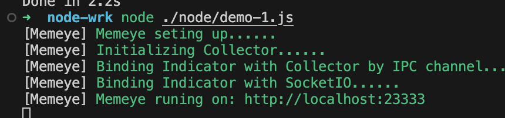

Node 性能监测
在本篇中，我们将介绍如何使用 Node.js 来进行性能检测。
压力测试基本概念
我们在压力测试中，PV、UV 和 QPS 是常用的指标，用于衡量系统的负载、性能和请求情况。它们的含义如下：
-
PV（Page View 页面浏览量）：
- 指的是网站或应用被访问的页面总数。每次页面被请求加载时，都会计为一次 PV。即使同一个用户多次访问同一个页面，每次请求都会计为一次 PV。
- 例如，如果一个用户刷新页面两次，那么就会产生 2 次 PV。
-
UV（Unique Visitor 独立访客）：
- 指的是在一定时间范围内访问网站或应用的独立用户数。UV 是通过用户的唯一标识（通常是 IP 地址或者 Cookie）来计算的，每个用户在一定时间内只算作一次 UV。
- 例如，如果一个用户在一天内多次访问网站，那么该用户仅会被计为 1 次 UV。
-
QPS（Queries Per Second 每秒查询数）：
- 指的是系统每秒钟处理的请求次数。QPS 衡量的是系统的响应能力，反映了系统在单位时间内的负载情况。
- 例如，如果每秒有 1000 个请求进入系统，那么 QPS 就是 1000。
- QPS = PV / T (PS: 1000000 / 10 * 60 * 60 = 27.7 一百万请求集中在 10 个小时，服务器每秒处理 27.7 个请求)
这三个指标帮助我们理解系统的访问量和负载情况。在进行压力测试时，通常会模拟不同数量的 PV、UV 和 QPS 来测试系统的承载能力、响应速度和稳定性。
WRK 压力测试工具
WRK 是一个高性能的 HTTP 基准测试工具，用于压力测试和性能分析，能够帮助开发者和运维人员评估 Web 服务器或应用的性能。它是一个现代化的、轻量级的、支持多线程的基准测试工具，常用于测试 HTTP/HTTPS 服务的吞吐量、延迟等指标。
WRK 的特点：
高并发支持：
WRK 支持多线程和多连接，因此可以模拟高并发的场景，进行大规模的压力测试。它能够在短时间内发起大量请求，生成大量的负载，适用于测试高并发场景下的性能表现。
灵活的配置：
可以通过命令行配置并发连接数、请求数等参数，以适应不同的测试需求。
生成详细的性能报告：
WRK 提供多种性能统计数据，如每秒请求数（RPS）、响应时间分布、吞吐量等，帮助分析 Web 应用的响应时间和负载能力。
支持长时间测试：
WRK 支持长时间的负载测试，并且可以在测试中提供实时的反馈，适合做稳定性测试、负载峰值测试等。
支持 HTTPS 和 HTTP/2：
WRK 支持通过 HTTPS 协议进行测试，还支持 HTTP/2，能够模拟现代 Web 应用场景。
安装 WRK
通过 git clone 命令下载 WRK 的源码，然后使用 make 命令进行编译之后会在 目录下生成 wrk 二进制文件。
1 | # 安装一下包 |
memeye 性能检测工具
Memeye 是一个用于 内存泄漏检测 和 性能分析 的工具，专门用于分析 Node.js 应用的内存使用情况。它帮助开发者识别和修复内存泄漏问题，从而优化应用的内存管理，防止应用在长时间运行过程中出现性能下降或崩溃。
Memeye 的主要功能：
内存泄漏检测：
Memeye 主要用于检测 Node.js 应用中的内存泄漏。内存泄漏会导致应用的内存使用不断增长，最终可能会导致崩溃或性能下降。Memeye 可以通过分析堆栈和内存分配情况，帮助开发者定位内存泄漏的来源。
内存分析报告：
它生成内存分析报告，包括内存使用的详细情况、对象分配情况等，帮助开发者识别异常内存增长、未释放的资源等问题。
实时监控和快照：
Memeye 允许开发者进行内存快照和实时监控，通过对比不同时间点的内存快照，识别内存的变化和潜在问题。
自动化检测：
它支持自动化的内存泄漏检测，适合在持续集成（CI）和自动化测试过程中使用，从而提前发现潜在的内存问题。
集成与易用性：
Memeye 提供了易于集成的 API，开发者可以将它集成到现有的 Node.js 项目中，通过简单的配置来进行内存检测。
使用场景：
长期运行的 Node.js 应用：像 Web 服务器或后台服务，在长时间运行后容易出现内存泄漏问题，Memeye 可以帮助检测和解决这些问题。
性能优化：当应用的内存使用量过高或响应时间变慢时，Memeye 可以帮助分析内存瓶颈，优化性能。
自动化测试：
在持续集成和自动化测试中，Memeye 可以定期进行内存泄漏检测，确保代码质量。
安装 Memeye
1 | npm install memeye -D |
进行压测
创建一个 node 项目
- 我们在本地使用 npm 创建一个项目，然后使用 npm 安装 memeye， 然后在 ./node/demo-1.js 中编写如下代码
1 | // node/demo-1.js; |
- 启动 node 服务之后再打开监控页面，可以看到服务启动之后的状态，如下图监控页面是：http://localhost:23333,(这个不是 node 服务地址，这个是监控服务地址)
1 | node ./node/demo-1.js |

打开浏览器，访问 http://localhost:23333/，可以看到服务启动之后的状态，我们只看主要的截图如下图：
当前运行的服务状态如下：
heapTotal（堆内存总量）：4.72 MB
heapUsed（已使用的堆内存）：3.96 MB
- 使用 WRT 进行测试，我们到刚才 wrk 的目录下 执行如下命令
1 | ./wrk -t4 -c100 -d10s http://localhost:3000/ |
-t4 表示并发连接数为 4，即同时发起 4 个请求。
-c100 表示每个连接的并发请求数为 100，即每个连接同时发起 100 个请求。
-d10s 表示测试持续时间为 10 秒。
http://localhost:3000/ 表示要测试的 URL。（这个是node 服务地址）
这是 wrk 压测工具的输出结果，包含多个关键性能指标，用于评估目标服务器的性能。以下是各参数的详细解释：
-
Thread Stats（线程统计）：- 每个线程在压测过程中的统计数据。
-
Latency（延迟）：- 平均延迟（Avg）：每个请求从发起到完成所需的平均时间。
- 这里是 122.14ms。
- 标准差（Stdev）：延迟分布的波动情况。
- 这里是 151.24ms，说明延迟分布有较大的波动。
- 最大值（Max）：请求中最长的延迟时间。
- 这里是 1.97s（1.97 秒）。
- 标准差百分比（+/- Stdev）：延迟分布中 95.14% 的请求在平均值附近的波动范围。
- 平均延迟（Avg）：每个请求从发起到完成所需的平均时间。
-
Req/Sec（请求/秒）：- 表示服务器每秒处理的请求数。
- 平均值（Avg）：196.78 req/sec，表示每秒大约处理了 196.78 个请求。
- 标准差（Stdev）：88.89 req/sec，表示每秒请求数的波动范围。
- 最大值（Max）：484.00 req/sec，表示某一秒内最高的请求处理数量。
- 标准差百分比（+/- Stdev）：65.98%，表示大多数请求处理速率分布在平均值的波动范围内。
- 延迟（Latency）：服务器响应时间表现良好，平均延迟为 122.14ms，但最大延迟接近 2 秒。
- 请求吞吐量（Req/Sec）：平均吞吐量接近 200 请求/秒，说明服务器的处理能力较为稳定，但波动较大（标准差 88.89 req/sec）。
- **并发连接（100 个）和线程数（4 个）**的配置适中，适用于中等负载的性能测试。
- node 服务状态如下：
我们可以监测到内存的变化和潜在问题，v8 分配的堆大小和使用情况，以及 GC 后的情况，我们先 memeye 检测到内存泄漏，并且我们看到内存的使用情况，如下图：
以下是各个的内存参数的解释：
- OS 层级指标：
- OS Free Mem（操作系统空闲内存）：表示操作系统当前可用的物理内存大小。这个值越大，说明系统的内存负载较轻。
- OS Total Mem（操作系统总内存）：表示系统中物理内存的总大小。
- Node.js 应用的内存指标：
- RSS（Resident Set Size，常驻内存大小）：
- 表示操作系统分配给 Node.js 进程的总物理内存，包括堆内存、栈内存、代码段和其他一些非堆区。
- 如果 RSS 增长过快，可能会影响服务器其他进程的性能。
- Heap Free（堆内存空闲量）：
- 表示当前 V8 引擎堆内存中尚未被分配的数据空间。
- Heap Used（已使用的堆内存）：
- 表示当前 V8 引擎堆内存中实际使用的部分，用于存储 JavaScript 对象等数据。
- RSS（Resident Set Size，常驻内存大小）：
- V8 引擎空间指标：
- V8 New Space Used（新生代空间使用量）：
- 表示 V8 引擎新生代空间中已使用的内存量。
- V8 Old Space Used（老生代空间使用量）：
- 老生代空间用于存储生命周期较长的对象，例如全局对象、闭包中的数据。
- V8 Code Space Used（代码空间使用量）：
- 表示存储 JIT 编译后生成的代码的内存空间。
- V8 Map Space Used（Map 空间使用量）：
- Map 空间用于存储 JavaScript 对象的内部结构（如隐藏类）。
- V8 New Space Used（新生代空间使用量）：
通过这些指标，可以更深入地监控 Node.js 应用的运行状况，并优化内存管理，确保应用在长期运行中保持稳定和高效。